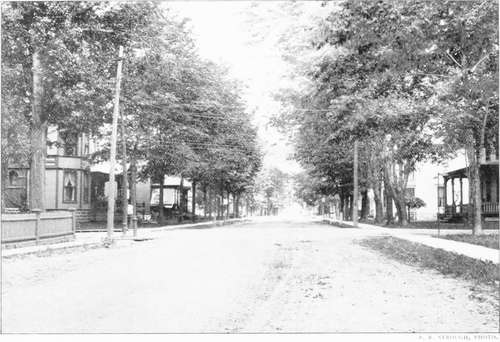
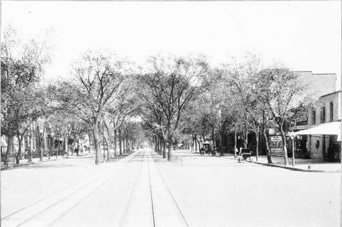

Praning
Description
This section is from the book "Tree Planting Streets And Highways", by William F. Fox. Also available from Amazon: Tree planting on streets and highways.
Praning
As trees grow larger and older they require pruning occasionally to remove dead limbs, to improve their shape, and. in the ease of very old trees, to restore them to vigor. This work should not be entrusted to ignorant, inexperienced persons, as is too often the case. Men of this class frequent our cities, and solicit employment as tree primers. With glib tongues they describe the defects, real or otherwise, in street or lawn trees, and obtain permission to do some work. As a result, beautiful specimens have been disfigured or irremediably injured. Whenever any extensive pruning becomes necessary proper means should be taken to secure the services of skilful, experienced men who have testimonials or recommendations signed by some competent authority in such matters.
Some of our best shade trees can be improved in appearance occasionally by trimming or cutting back in order to correct irregularities, or to attain some form better adapted to the situation. Such work can be done without injury to the trees; but it can be undertaken safely only by a skilful, professional tree primer.
When a tree becomes " stag headed " by dying at the top the dead limbs thus exposed should be cut off, and the rest of the tree trimmed somewhat to correct the irregularity in its general outline. Old trees that have become bare and unsightly may often be restored to temporary vigor and clothed with foliage by severe pruning; but any extensive trimming of this kind is justifiable only when it is necessary to prolong the lite of a tree which otherwise would soon die. Some species, Hard Maple for instance, along a walk or driveway can be made more serviceable under certain conditions by increasing their height, which is accomplished by cutting off a few of their lower limbs. But this operation requires careful, intelligent work, and should not be resorted to unless there are special reasons for it.
Pruning is necessary at times the same as surgery, and is successful only when skilfully done.
The best time for pruning is in the fall, soon after the leaves have dropped. Trees may be pruned in the spring with safety, but it must be done early and before there is any swelling of the buds. Soft maples will stand a moderate trimming during the sap season.
Whenever a branch is removed, whether a dead or a live one, it must be cut off close to and even with the trunk, no matter how large the wound. The new wood and bark will then, in time, cover the denuded space. The process by which this recovery is accomplished is well explained in Des Cars' treatise on tree pruning, a copy of which should be in the possession of every one who owns or has charge of trees. If a branch is not cut oft close to the trunk, the projecting stub soon decays, its bark falls off, and the stump remains "like a plug of decaying wood driven into the trunk," from which the rotten mass extends rapidly to the heart of the tree.*
In removing a large branch, enough of the outer portion should be first sawed off to prevent its weight from splitting the wood downward beyond the point where the final cut is to be made. All wounds made in pruning should be covered with coal tar or white lead to exclude the air from the raw surface. Coal or gas tar, by penetrating the pores of the wood, acts as a preservative, and at the same time prevents the inroads of fungi and insects. The painting of the exposed surface is more efficacious if done when the sap has ceased its flow, for then the material applied will adhere more readily to the wood.
Nearly two hundred and fifty years ago John Evelyn in discussing the subject of pruning says: lt Putatio, or Pruning, is the purgation of trees in general from what is superfluous. The antients found such benefit in pruning that they feigned .1 Goddess presided over it, as Arnobius tells us: and, in truth, it is in the discreet performance of this work that the improvement of our timber and woods does as much consist as in anything whatsoever. It is a misery to see how our fairest trees are defaced and mangled by unskillful wood-men and mischievous borderers, who go always armed with short hand-bills, hacking and chopping off all that comes in their way; bv which our trees are made full of knots, stubs, boils, cankers, and deformed bunches, to their utter destruction. As much to be reprehended are those who cither begin this work at unseasonable times, or so maim the poor branches that, either out of laziness, or want of skill, they leave most of them stubs, and instead of cutting the arms and branches close to the bole, hack" them off a foot or two from the body of the tree, by which means they become hollow and rotten, and are so many conduits to receive the rain and the weather, which conveys the wet to tin-very matrix and heart, deforming the whole tree with many ugly botches which shortens its life and utterly mars the timber." lie also cautions tin- primer 44 to cut smooth and sloping upwards, it upright boughs, otherwise downwards; and be sure to emplaster great wounds to keep out the wet, and hasten the covering of the bark: besides, for interlucation, remove exuberant branches, et spissae nemorum comce where the boughs grow too thick and are cumbersome, to let in the sun and air."
*A treatise on Pruning Forest and Ornamental Trees. By A. Des Cars. Translated from French, with an introduction by Charles S Sargent, Professor of Arboriculture in Harvard College. Published by the Massachusetts society for the Promotion of Agriculture. Boston. 1894
Silva, A Discourse «»i Forest Trees and the Propagation of Timber. By John Evelyn, Esq., F. R. S. Written in 1662. 2 Vols. 4to. 802 pp.
Street With Trees Planted Inside Walk. — Watertown, N. V.
Maples And Elms. — New York Avenue, Washington, DC
When one reads the old waitings of this silvan worthy it would seem that there is nothing new to be said on trees or forestry, and that whatever one might write on the subject it would appear very much like plagiarism.
Continue to: